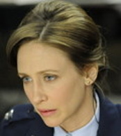

베라 파미가

로레인 워렌 역할

컨저링는 1971년 미국 로드아일랜드주 해리스빌의 외딴 농가를 배경으로, 페론 가족이 겪은 초자연 현상 실화를 모티브로 한 공포 영화.
1971년 로드아일랜드의 외딴 농가로 이사한 페론 가족이 겪는 공포를 다룬 실화 바탕의 영화입니다. 초자연 현상 연구가 워렌 부부가 집안에 깃든 마녀의 악령을 퇴마하는 과정에서 가족을 구하는 스토리를 담은 오컬트 공포물입니다.

로레인 워렌 역할

에드 워렌 역할